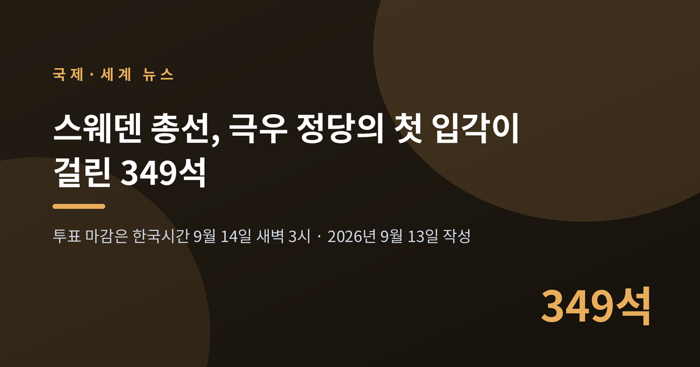
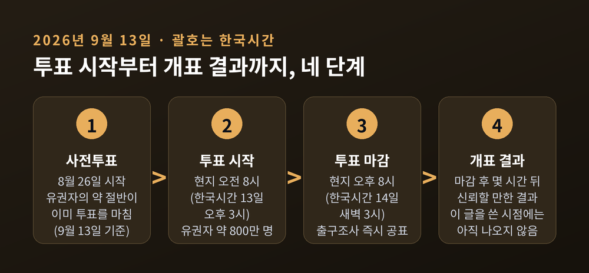
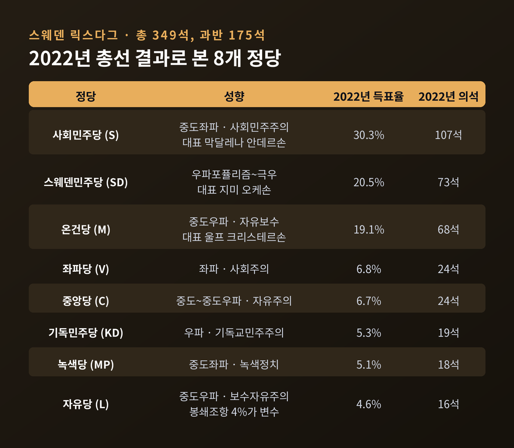
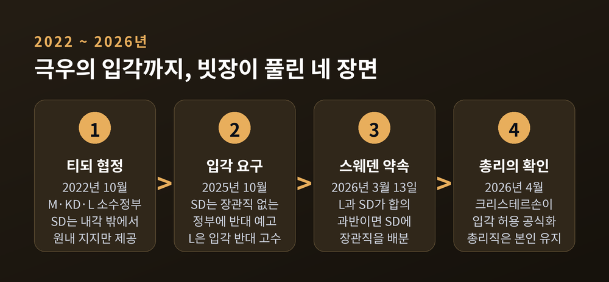
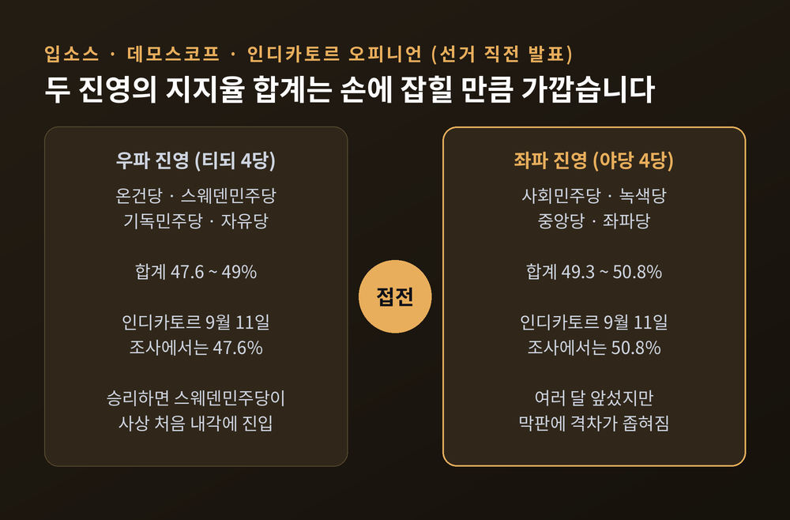
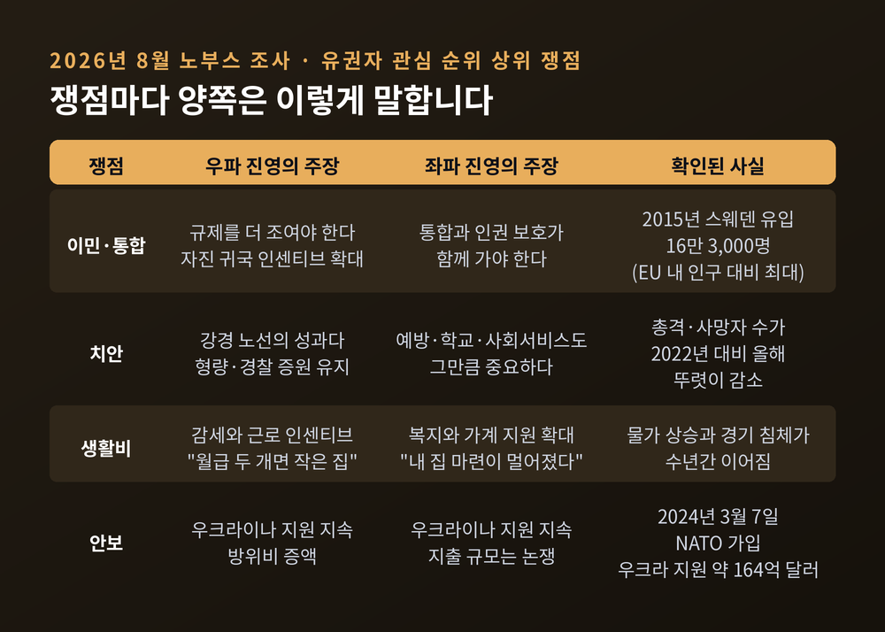
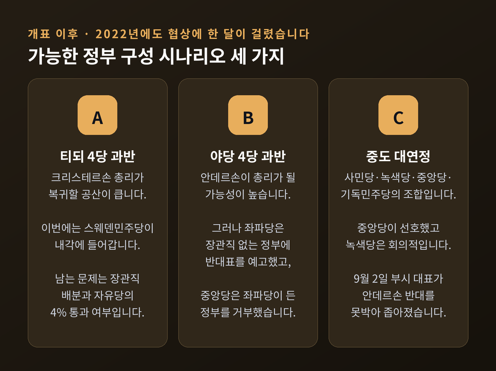

스웨덴 총선 투표 마감 임박, 극우 스웨덴민주당 첫 입각 갈림길

이번 글에서는 2026년 9월 13일 치러진 스웨덴 총선을 정리해 보겠습니다. 극우 성향으로 분류되는 스웨덴민주당이 사상 처음으로 내각에 들어갈 수 있느냐가 최대 쟁점입니다. 이 글은 한국시간 9월 13일 저녁에 작성했으며, 그 시점에는 아직 투표가 진행 중이었습니다.
■지금 스웨덴에서 벌어지는 일
스웨덴은 9월 13일 현지시간 오전 8시에 투표를 시작했습니다. 마감은 같은 날 오후 8시입니다. 한국시간으로는 9월 14일 새벽 3시입니다.
출구조사는 마감 직후 공표됩니다. 신뢰할 만한 개표 결과는 그로부터 몇 시간 뒤에 나옵니다. 이 글을 쓰는 한국시간 13일 저녁 시점에는 득표율도 의석수도 나오지 않았습니다. 따라서 아래 내용은 결과 보도가 아니라 쟁점과 구조에 대한 해설입니다.
선거 규모는 이렇습니다. 유권자는 약 800만 명입니다. 인구는 1,060만 명입니다. 사전투표는 8월 26일부터 진행됐고, 유권자의 약 절반이 이미 표를 넣었습니다. 2022년 총선 투표율은 84.21%였습니다. 스웨덴의 투표율은 통상 80%를 넘습니다.
같은 날 지방선거도 함께 치릅니다. 290개 기초자치단체와 21개 광역의회 선거가 동시에 진행됩니다.

■349석과 175석 — 숫자로 보는 구조
스웨덴 의회는 릭스다그라고 부릅니다. 총 의석은 349석입니다. 과반은 175석입니다.
선출 방식은 개방형 명부 비례대표제입니다. 봉쇄조항은 전국 득표율 4%입니다. 단일 선거구에서 12%를 얻어도 통과됩니다. 349석 가운데 310석은 29개 선거구에서 뽑고, 나머지 39석은 전국 단위 조정의석으로 배분해 비례성을 맞춥니다.
이 4% 선이 이번 선거의 숨은 변수입니다. 우파 진영의 자유당은 지난 4년 대부분의 기간 동안 여론조사에서 4%를 밑돌았습니다. 자유당이 문턱을 못 넘으면 그 표가 사표가 되고, 우파 진영 전체의 과반이 흔들립니다.
2022년 총선 결과는 이랬습니다. 사회민주당 30.3%로 107석. 스웨덴민주당 20.5%로 73석. 온건당 19.1%로 68석. 좌파당 6.8%, 중앙당 6.7%, 기독민주당 5.3%, 녹색당 5.1%, 자유당 4.6%가 뒤를 이었습니다.
여기서 눈여겨볼 대목은 순서입니다. 스웨덴민주당이 총리를 배출한 온건당을 제치고 제2당이 됐습니다.

■왜 중요한가 — 38년 만에 열리는 문
스웨덴민주당은 1988년에 창당했습니다. 신나치 운동과 백인우월주의 계열에 뿌리를 두고 있다는 점은 연합뉴스와 알자지라를 비롯한 여러 매체가 공통으로 짚는 대목입니다.
오랫동안 이 당은 정치적 기피 대상이었습니다. 다른 정당들은 협력 자체를 거부했습니다. 예전엔 "저 당과는 말도 섞지 않는다"가 원칙이었습니다. 지금은 장관직을 몇 개 줄 것인지가 협상 의제입니다.
변곡점은 2022년이었습니다. 크리스테르손 총리는 온건당·기독민주당·자유당 3당의 소수연립정부를 세우면서, 스웨덴민주당의 원내 지지를 받는 '티되 협정'을 맺었습니다. 스웨덴민주당은 내각 밖에 있었지만 범죄와 이민 정책에 상당한 영향력을 행사했습니다.
그리고 2026년 3월 13일, 마지막 빗장이 풀렸습니다. 그동안 극우의 입각을 끝까지 막겠다던 자유당이 스웨덴민주당과 '스웨덴 약속'이라는 합의를 발표했습니다. 티되 4당이 과반을 얻으면 스웨덴민주당에 장관직을 준다는 내용입니다. 합의문에는 2030년 총선과 동시에 유로화 도입 국민투표를 실시한다는 항목도 들어갔습니다.
크리스테르손 총리는 4월에 이를 공식화했습니다. 우파가 과반이면 스웨덴민주당을 정부에 들이겠다고 밝혔습니다. 다만 스웨덴민주당이 더 큰 당이 되더라도 총리직은 자신이 맡겠다고 못박았습니다.
장관직 숫자를 두고는 이미 신경전이 벌어졌습니다. 오케손 대표는 의석 비율대로 나누자고 주장했습니다. 여론조사 기준으로 환산하면 12~14개에 해당합니다. 크리스테르손 총리는 웃으며 거절했습니다. 장관직 배분은 선거가 끝난 뒤의 협상 사항이라는 입장입니다. 12~14개는 어디까지나 요구치이지 확정된 숫자가 아닙니다.

■여론조사는 어디까지 말해주나
선거 직전 여론조사에서는 좌파 진영이 근소하게 앞섰습니다.
사회민주당·녹색당·중앙당·좌파당 네 정당의 합계는 49.3~50.8%였습니다. 온건당·스웨덴민주당·기독민주당·자유당 네 정당의 합계는 47.6~49%였습니다. 입소스, 데모스코프, 인디카토르 오피니언 등이 조사하고 스웨덴 라디오와 아프톤블라데트, 다겐스 뉘헤테르가 보도한 수치입니다.
9월 11일 금요일에 나온 인디카토르 조사는 야당 4당 50.8%, 우파 진영 47.6%였습니다. 노부스와 TV4의 조사에서는 야당 4당 합계가 50.3%였습니다.
다만 이 숫자들은 정당별 득표율이 아니라 진영 합계입니다. 그리고 좌파 진영의 우위는 여러 달 이어졌지만, 선거 막바지에 격차가 크게 좁혀졌습니다. 현지 매체들이 이번 선거를 "칼날 위의 선거"로 부른 이유입니다.

■유권자는 무엇을 보고 찍었나
2026년 8월 노부스 조사에서 스웨덴 유권자가 꼽은 중요 정책 순위는 이랬습니다. 보건의료, 교육, 법질서, 이민·통합, 노인돌봄, 국가경제, 고용, 기후, 세금, 에너지 순입니다.
이민 문제입니다. 2015년 난민 위기 때 유럽 전체에 약 130만 명의 망명 신청자가 도착했고, 스웨덴에만 16만 3,000명이 들어왔습니다. 스웨덴 역사상 최다이자 EU 내 인구 대비 최대 규모였습니다. 그 해 스웨덴 SOM 조사에서 유권자의 53%가 이민을 가장 중요한 문제로 꼽았습니다. 스웨덴민주당의 성장 동력이 여기 있다는 것이 여러 분석가의 설명입니다.
이후 스웨덴은 정책을 크게 조였습니다. 체류·시민권 요건을 강화했고, 2026년부터는 체류허가를 가진 이주민에게 약 3만 6,000달러를 자진 귀국 인센티브로 지급하는 제도도 도입했습니다. 망명 신청은 정점 대비 크게 줄었습니다.
여기서 논쟁이 갈립니다. 스웨덴민주당은 더 강한 규제를 요구합니다. 중도좌파도 과거보다 훨씬 제한적인 쪽으로 이동했습니다. 그래서 쟁점의 축이 "이민을 줄일 것인가"에서 "통합을 어떻게 할 것인가"로 옮겨갔다는 분석이 나옵니다.
반대편의 지적도 분명합니다. 아프톤블라데트 논설위원 지나 알데와니는 일부 강경 정책이 우파 지지자들에게조차 지나쳤다고 평가했다고 알자지라에 밝혔습니다. 대표적인 사례가 있습니다. 스웨덴에서 자란 청소년이 만 18세가 되면 부모는 남는데 본인만 퇴거 명령을 받는 일이 잇따랐습니다. 정부는 2026년 3월 이 관행을 중단했고 6월에 제도 개선에 착수했습니다.
치안 문제도 큽니다. 인구 1,060만 명의 스웨덴은 유럽에서 총기 사망률이 가장 높은 나라 중 하나입니다. 정부는 형량 강화와 경찰 증원, 범죄조직 표적 대응으로 맞섰고, 총격과 사망자 수는 2022년 대비 올해 뚜렷이 줄었습니다. 우파는 이 성과가 강경 노선의 정당성을 입증한다고 봅니다. 좌파는 예방과 학교, 사회서비스도 그만큼 중요하다고 봅니다.
생활비도 빼놓을 수 없습니다. 안데르손 대표는 토론에서 "점점 더 적은 수의 스웨덴인만이 내 집 마련의 꿈을 이룬다"며 4년간 실업이 늘고 임금의 구매력이 줄었다고 지적했습니다. 크리스테르손 총리는 평범한 월급 두 개면 작은 집 한 채는 살 수 있어야 한다고 받아쳤고, 경제성장과 세제 인센티브로 첫 주택 계약금을 모을 수 있게 하겠다고 말했습니다.

■안보라는 새 변수
이번 총선은 스웨덴이 NATO에 가입한 뒤 처음 치르는 총선입니다. 스웨덴은 2024년 3월 7일 NATO 회원국이 됐습니다. 200년 넘게 지켜온 군사적 비동맹을 접은 결정입니다.
우크라이나 지원에는 정치권 전반의 합의가 이례적으로 넓습니다. 스웨덴은 2022년 이후 약 164억 달러 규모의 군사·민간 지원을 제공했습니다. 논쟁은 지원 여부가 아니라 지출 규모와 유럽 자체 방위의 수준에 집중됐습니다.
반면 팔레스타인 정책은 정반대로 갈립니다. 현 우파 정부는 가자에서의 이스라엘 행위를 제노사이드로 규정하지 않았고 남아공의 국제사법재판소 제소에도 참여하지 않았습니다. 다만 극단주의 정착민에 대한 EU 제재를 추진했고 정착촌 생산품에 추가 관세를 제안했습니다. 스웨덴민주당은 진영 내에서 가장 친이스라엘 노선입니다. 이번 회기에 대사관의 예루살렘 이전과 팔레스타인 원조 중단을 발의했습니다. 좌파 진영은 UNRWA 지원 재개를 공약했습니다.
막판에는 러시아 문제가 불거졌습니다. 극단주의 감시단체 엑스포는 릭스다그에 근무하는 스웨덴민주당 소속 공무원이 수년간 친러 선전물을 공유해 왔다고 폭로했습니다. 안데르손 대표는 9월 10일 토론에서 국방부 열쇠가 그 정당에 넘어갈 수 있다며 유권자에게 위험을 감수하지 말라고 했습니다. 이는 야당 대표의 주장이며, 당사자 측 반박 내용은 이 글을 쓰는 시점까지 확인하지 못했습니다.
■유럽이라는 배경 — 독일 작센안할트
스웨덴 총선 일주일 전인 9월 6일, 독일 작센안할트 주의회 선거가 있었습니다.
극우 성향의 독일을 위한 대안(AfD)이 43.8%를 얻었습니다. 이전 선거보다 23%포인트 오른 수치이자, 독일 주선거에서 이 당이 기록한 최고 성적입니다. 집권 기독민주연합은 17.2%로 반토막 났습니다. 투표율은 77.8%로 사상 최고였습니다. AfD 작센안할트 주지부는 주 헌법수호청이 '확인된 극우'로 분류한 조직입니다.
그런데 AfD는 절대과반에 근소하게 미치지 못했습니다. 절대과반은 42표인데, 주요 정당들의 의석이 촘촘하게 나뉘면서 교착이 생겼습니다. 신생 정당 BSW가 캐스팅보트를 쥔 형국입니다. 하인리히 뵐 재단의 분석은 정부 구성이 매우 어려울 것으로 내다봤습니다.
같은 분석은 AfD 지지층의 정서도 짚었습니다. 물가 상승에 압도된다는 응답이 AfD 지지자 사이에서 89%였습니다. 전체 평균은 70%였습니다. 생활수준이 위협받는다는 응답은 80%였고, 전체 평균은 58%였습니다. 젊은 남성과 저학력 유권자층에서 지지가 두 자릿수로 늘었습니다.
다만 독일 AfD와 스웨덴민주당은 서로 다른 정당이고, 두 나라가 놓인 조건도 같지 않습니다. 여기서는 같은 시기 유럽에서 벌어진 별개의 사건을 비교 맥락으로 놓았을 뿐입니다.
■한국에는 어떤 의미인가
거리가 먼 나라의 선거처럼 보이지만 접점은 있습니다.
스웨덴은 EU 회원국이지만 유로존은 아닙니다. 자국 통화 크로나를 씁니다. 자유당과 스웨덴민주당의 합의문에 유로 도입 국민투표 항목이 들어간 것도 그래서입니다. EU 차원의 이민·통상·기후 규범 논의에서 스웨덴 정부의 성향이 바뀌면, EU와 접점이 넓은 한국 기업에도 간접적인 영향이 갈 수 있습니다.
방산도 있습니다. 스웨덴 방산기업 사브는 유럽 10대 방산업체 중 하나이고, 한국 기업과의 파트너십 확대를 공개적으로 밝혀 왔습니다. 한화시스템에 C-130 수송기용 MAW-400 센서를 공급한 사례가 있습니다. 2023년 기준으로 한국의 대스웨덴 투자는 174건 12.4억 달러, 스웨덴의 대한국 투자는 381건 28.83억 달러입니다.
스웨덴의 NATO 가입으로 발트해 안보 구도가 달라졌다는 점도 짚어둘 만합니다. 유럽 방위비 증액 흐름과 직결되는 변화이기 때문입니다.
■개표 이후에 벌어질 일
어느 쪽이 이기든 정부 구성은 간단하지 않습니다. 2022년에도 협상에 한 달이 걸렸습니다.
우파 진영이 과반을 얻으면 크리스테르손 총리가 복귀할 가능성이 높습니다. 이번에는 스웨덴민주당이 내각에 들어갑니다. 남는 문제는 장관직 배분과 자유당의 4% 통과 여부입니다.
좌파 진영이 과반을 얻어도 길이 평탄하지는 않습니다. 좌파당은 장관직을 받지 못하는 정부에는 반대표를 던지겠다고 선언했습니다. 중앙당은 좌파당이 들어간 정부는 지지할 수 없다고 못박았습니다. 네 정당의 의석이 모두 필요한데 두 정당의 요구가 정면으로 충돌합니다.
제3의 길로 사회민주당·녹색당·중앙당·기독민주당의 중도 연정이 거론되기도 했습니다. 그러나 9월 2일 기독민주당의 부시 대표가 재선거를 촉발하더라도 안데르손에게는 반대표를 던지겠다고 밝히면서 가능성이 줄었습니다.

정리하면 이렇습니다.
스웨덴 유권자에게 이번 선거는 두 개의 질문이었습니다. 생활비와 치안, 이민을 어느 쪽이 더 잘 다룰 것인가. 그리고 30년 넘게 유지해온 경계선을 넘을 것인가.
지지하는 쪽은 안전과 물가라는 실질적 이유를 말합니다. 반대하는 쪽은 소수자 보호와 인권, 유럽 협력의 후퇴를 우려합니다. 어느 한쪽을 대신 판단할 일은 아닙니다. 다만 스웨덴 안에서 이 논쟁이 어떤 언어로 오갔는지는 기록해둘 만합니다.
이 글에는 한계가 분명합니다. 개표 결과가 나오기 전에 쓴 글이라 숫자를 확정할 수 없었습니다. 결과가 나오면 판단의 근거도 달라질 것입니다.
"금기는 한 번에 무너지지 않습니다. 조금씩 옮겨진 선이 어느 날 사라져 있을 뿐입니다."
투표함이 열리면 무엇이 달라지겠냐고 물으신다면, 적어도 유럽 정치의 한 페이지가 넘어간다고 답하겠습니다.
■참고한 주요 보도
- Al Jazeera 「Voting under way in Sweden election that could see far right enter gov't」 (2026-09-13)
- Al Jazeera 「Sweden heads to the polls: What's at stake in the knife-edge election?」 (2026-09-12)
- The Local Sweden / AFP 「It's the final countdown: Sweden races into final stretch before election」 (2026-09-11)
- Atlantic Council 「Your primer on Sweden's upcoming parliamentary elections」 (2026-09-09)
- 하인리히 뵐 재단(EU) 「2026 Saxony-Anhalt state election」 (2026-09-08)
- NPR 「Far-Right AfD scores historic victory in German state election」 (2026-09-06)
- Al Jazeera 「German far-right AfD wins Saxony-Anhalt election, falls short of majority」 (2026-09-06)
- 연합뉴스·전남일보 「스웨덴 총선 돌입…극우 첫 입각이냐 좌파 정권 탈환이냐」 (2026-09-13)
- The Local 「Sweden Democrats aim for half of cabinet seats in a right-wing government」 (2026-05-25)
- SVT Nyheter 「L och SD överens – här är alla punkter」 (2026-03-13) · Expressen (2026-03-13)
- Novus 「Viktigaste politiska frågan – augusti 2026」 (2026-08-24)
- 스웨덴 선거관리청(Valmyndigheten) 2022년 총선 공식 결과 · Wikipedia 「2026 Swedish general election」
- NATO 「Sweden officially joins NATO」 (2024-03-07)
- 파이낸셜뉴스 「유럽 10대 방산업체 사브 'K-방산 유럽 진출 지원'」 (2025-09-17) · 외교부 국가·지역 정보 '스웨덴'
- 전체 출처 목록과 발행일, 수치가 엇갈리는 지점의 정리는 같은 폴더의
research.md에 담겨 있습니다.